3D : Metal Additive Manufacturing#
The full runnable script can be found at examples/public/metaladditivemanufacturing.py on GitHub.
Note
It's recommended to read all the examples in order, as previously explained portions won't be explained as thoroughly in later examples, and vice versa for the content introduced in this example.
Note
Some of the function calls, particularly for the visualizations, have been simplified from the calls used to generate the images. This is to highlight only the necessary parameters for these functions.
Includes#
- Purely Physics-Informed
- Time-Dependent Three-Dimensional Problem (
BoundedBox) - Feedforward Neural Networks (
FNN) - Complex Pathing (
ComplexLinearPath,line_waypoint_generator()) - Uniform Grid Sampling (
UniformSampler) - Localized Sampling (
.add_path_shape()) - Weight Initialization (
Initialization) - Learning Rate Schedulers
- Hard Constraints (
HardConstraint) - Evaluation (
Evaluation,SingleSpatialGridEvaluation)
Problem Description#
Wire-arc directed energy deposition is an additive manufacturing technique based on conventional welding technology, utilizing a robotic system for the layer-by-layer deposition of complex structures. However, the complex thermal dynamics inherent to the process present challenges in ensuring the structural integrity and mechanical properties of fabricated components. Traditional methodologies, such as FEM, are capable of predicting thermal histories during deposition, but can be prohibitively computationally expensive when performing the rapid, repetitive simulations needed to determine optimal printing strategies.
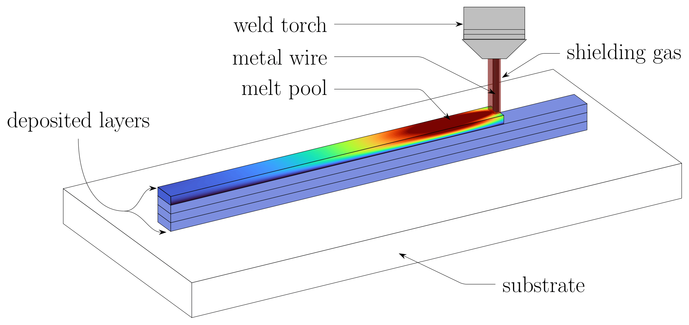
Instead, let's surrogate the process using purely physics-informed neural networks.
The transient heat conduction problem is governed by the following equations:
Where \(Q_{\mathrm{goldak}}\) refers to the volumetric heat flux most representative of wire-arc additive manufacturing, as defined in Goldak et al..
Figure
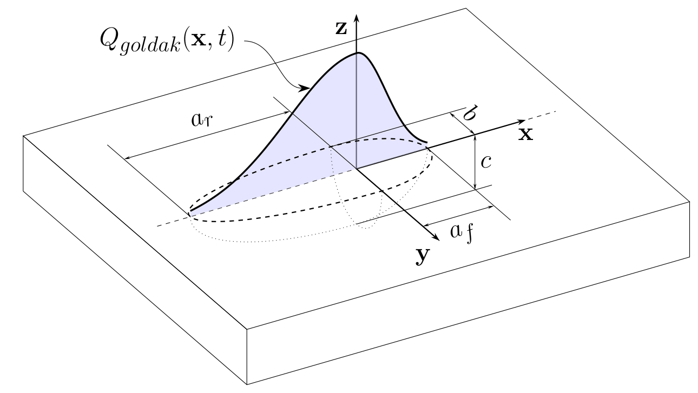
Domain#
Starting with a time-dependent 3D Domain:
time = pinnjax.Time(0, 3, 0.05)
domain = pinnjax.SpatialDomain(min=(0, 0, 0), max=(4e-2, 6e-3, 4e-3), times=time)
Just to quickly verify it.
domain.draw()
Figure
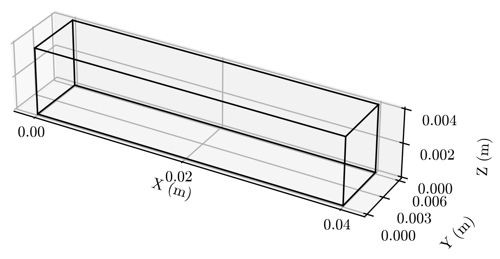
Pathing#
Pathing is explained in much more detail in Example: Complex Pathing, so for more specific questions I'd recommend looking there. However, there we use circle_waypoint_generator(), while here we will use line_waypoint_generator().
waypoints = pinnjax.line_waypoint_generator(
speed=0.01,
direction=(1, 0, 0),
initial=(0.0, 3e-3, 4e-3),
time=time,
segments=30
)
This creates a line split into 30 segments, moving in the (1, 0, 0) direction, or straight in the "x" direction, at 0.01 \(m/s\), starting from the coordinate (0.0, 3e-3, 4e-3) for the entire Time range.
Note
The temporal waypoints indicate where the source is at a given time; however, the Path is always moving. Therefore, if the simulation Time exceeds the time of the final waypoint, the Path will continue until the end of the simulation, even if the final waypoint was intended to be the stopping point.
Then, we can validate our Path.
path.validate(domain)
In continuation of the note above, this validation would fail when provided a sufficiently large temporal SpatialDomain, such that the Path continues off the edge after the final waypoint.
And visual validation,
path.draw(domain)
Figure
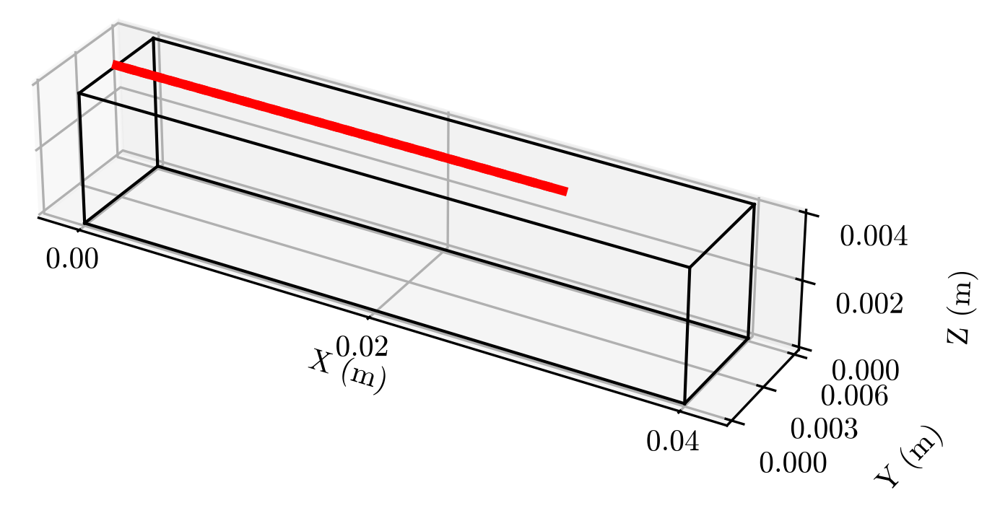
Or as an animation,
path.animate(domain)
Figure
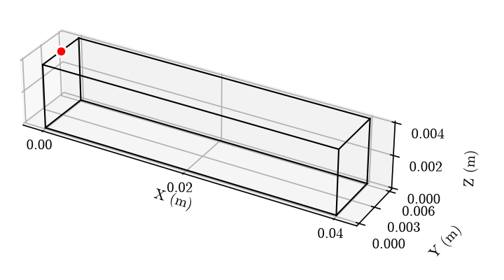
Geometry#
Now, to create the geometry, or ComplexShape. A ComplexShape is named as such because it is constructed from a combination of simple primitives, or Shapes. In the case of BoundedBox, this consists of 7 shapes:
- A
Box, and - 6
Rectangleson each face.
We could set initial = True, but we are going to hard constrain that later. In that case, we would have 8 shapes.
obb = domain.to_obb()
geometry = pinnjax.BoundedBox(*obb, times=time)
A BoundedBox can be created by supplying the origin, edge1, edge2, and edge3, in that order. obb = domain.to_obb() simplifies this by returning these variables directly from our SpatialDomain, and most importantly, in the correct order given the expected normal directions. If you didn't know, in Python, * unpacks a tuple, thus *obb -> origin, edge, edge, edge.
As with the other example cases, this newly created ComplexShape can be visualized with geometry.draw().
Since the order of the internal Shapes is important for later steps, such as sampling and assigning residuals, this is the internal order:
shapes: list[Shape] = [
interior,
left_face, # -X
right_face, # +X
front_face, # -Y
back_face, # +Y
bottom_face, # -Z
top_face, # +Z
]
But what does that even mean? Luckily, we can visualize this as follows:
geometry.draw(colored_walls=True)
Figure
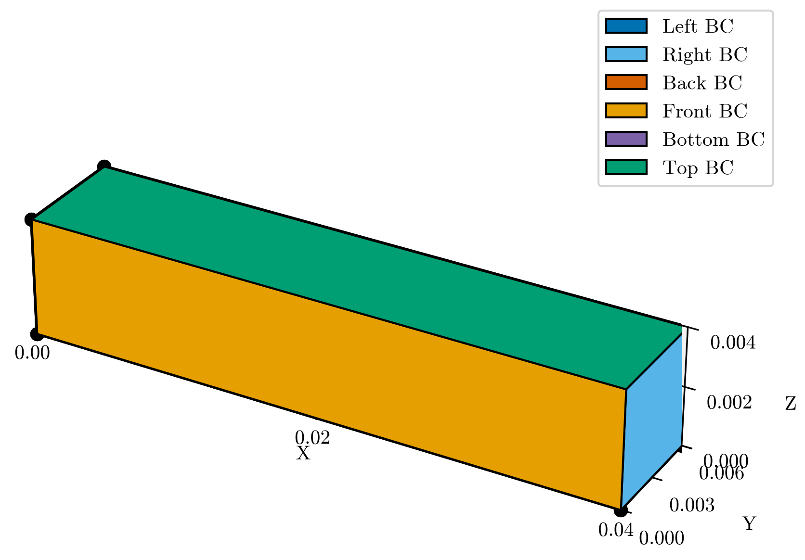
Note
The static plots seen throughout this example are actually interactive \(\texttt{matplotlib}\) figures saved as .pngs to fit the medium, but it's recommended to run this script to get a full understanding of the output of these functions.
Sampling#
Another example, Complex Pathing, gives a better overview of sampling-related functions, in particular a brief comparison between the two existing SamplingMethods: UniformSampler and SobolSampler. Here we will use UniformSampler, but keep in mind that the same steps could've been done with SobolSampler, perhaps with improved results.
method = pinnjax.UniformSampler(mode="grid_resolution")
resolutions = [2e-3, 2e-3, 2e-3, 2e-3, 2e-3, 1e-1, 1e-3]
While this won't always be the case, with our heat source we can estimate the general location of the most important points: directly surrounding the heat source as it travels, where the temperatures and gradients are expected to be largest. Thus, we can utilize this expert knowledge to improve our training, first by generating additional Shapes.
geometry.add_path_shape(path, radius=[2e-3, 2e-3, 4e-3])
The radius refers to a border surrounding each waypoint; thus, depending on the segment length, they may or may not overlap. Additionally, using more segments during generation will result in more Shapes being created during this step.
As the number of values in resolutions is expected to match the internal Shapes, both in order and amount, we need to add two more resolutions for our 'path shapes'.
resolutions.extend([8.5e-4, 8.5e-4])
Here the resolutions are provided as a list because we wish to vary the resolution based on the perceived importance of each internal Shape. However, if all resolutions should be the same, resolutions = 2e-3 is equivalent to a full list of identical entries.
Now let's sample.
geometry.sample(method, resolutions)
If you plot following this step using geometry.draw(show_samples=True), you'll see something rather cluttered given the additional 61 Shapes, so let's clean that up a bit.
geometry.unpack(flatten=True)
It's not only important to unpack and flatten for cleanliness, but also for computational reasons. .unpack() opens the new internal ComplexShape from our ComplexShape. Inception.
Then, .flatten() replaces all compatible shapes with one all-encompassing Shape. A 'compatible' Shape in this case means that all the children have the same Shape, Residual, and Loss.
This is computationally important for many reasons, but one primary reason is \(\texttt{JAX}\). Just-in-Time compilation constructs machine code just-in-time for each Array shape, so each additional Array shape encountered during runtime triggers an additional, potentially time-consuming compilation.
Here we can see the sampled points through time, where it is clear to see the additionally sampled points under the heat source as it travels.
geometry.animate(show_samples=True, show_path=True)
Figure
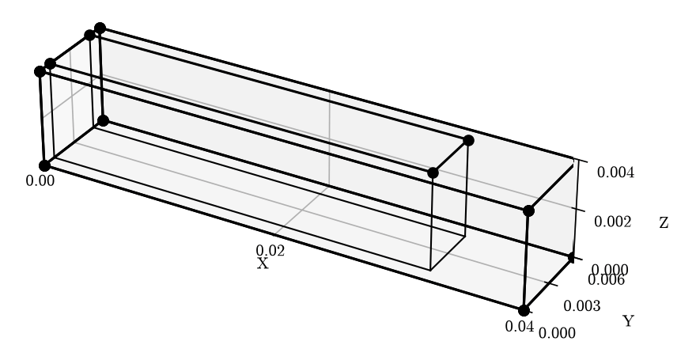
Or the cumulative collocation points through time.
geometry.animate(show_samples=True, show_path=True, additive=True)
Figure
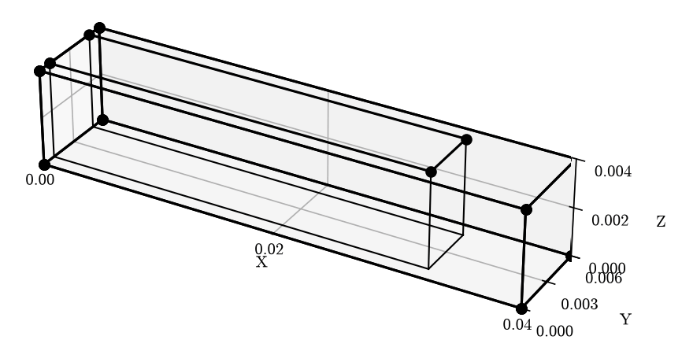
And, finally, as a still image.
geometry.draw(show_path=True, show_samples=True)
Figure
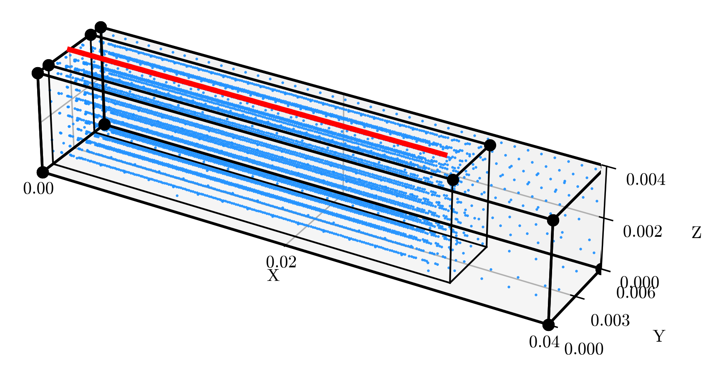
Material Parameters#
Enough visualization for now.
Quickly, let's define some material parameters for our problem.
goldak = pinnjax.Goldak(
power=2.45e3,
efficiency=0.9,
width=0.006,
front_ellipsoid_length=0.00257,
rear_ellipsoid_length=0.006,
depth=0.004,
front_ellipsoid_distribution_factor=0.6,
rear_ellipsoid_distribution_factor=1.4,
)
thermal_material = pinnjax.ThermalMaterial(
heat_capacity=6.20e2,
density=7.85e3,
radiation_coefficient=0.2,
thermal_conductivity=45,
convection_coefficient=20,
ambient_temperature=298,
temperature_scale=5000, # Scale-Factor
)
Both of these are just containers, which make future functions a bit simpler, in particular the Residuals we will define later.
Model#
The next step is the model. Most of this was explained in previous examples, so I won't nearly be as verbose.
optimization: pinnjax.Optimization = pinnjax.Optimization(
pinnjax.NormalizationBetweenNeg1and1(domain), # input transformation
pinnjax.ExpectedOutputRangeSoftplus(
lower_bound=thermal_material.ambient_temperature, scale=thermal_material.temperature_scale
), # output transformation
( # hard constraints
pinnjax.HardScalarInitialConstraint(
times=time,
initial_condition=thermal_material.ambient_temperature,
),
pinnjax.HardDirichletConstraint(
domain=domain,
condition=thermal_material.ambient_temperature,
side=(0, 0, -1),
),
),
)
The HardConstraints are explained in detail in the 1D Diffusion example, but the ExpectedOutputRangeSoftplus (OutputTransformation) is new, so let's briefly explain it.
Neural Networks are generally easier to train when the numerical values, and therefore the gradients, remain smaller. This is part of the reason for normalizing the inputs. However, in the case of WAAM, the expected temperature range is much larger. Therefore, to take normalized inputs between -1 and 1 and output a temperature in the thousands, the weights may need to become very large. To mitigate this, we scale the output toward the expected range. In the case of ExpectedOutputRangeSoftplus, this transformation is:
- transformed_output = lower_bound + scale * softplus(outputs).
The purpose of hyperparameter optimization is to modify the numerous parameters and factors involved in training such that the model reaches the global minimum, ideally as quickly as possible. However, in addition to 'going faster', it's also possible to reach your final destination faster by 'starting closer'.
This is the theory behind 'Weight Initialization'.
initialization = pinnjax.Initialization(
weights=jinit.variance_scaling(
scale=1.48**2,
mode="fan_in",
distribution="truncated_normal", # proven best for GELU
),
bias=jinit.zeros,
)
The pinnjax.Initialization, like some of the other attrs, is just a container around the 'jax.nn.initializers', so you should look there for possible options and tips for choosing the ideal initialization. Here, as the note says, we use a variance-scaled version of the Kaiming Initialization because it has been shown to work well with the Activation function we will use in a moment, GELU.
topology = (4, 64, 64, 64, 64, 1) # depth: 4 - width: 64
Figure
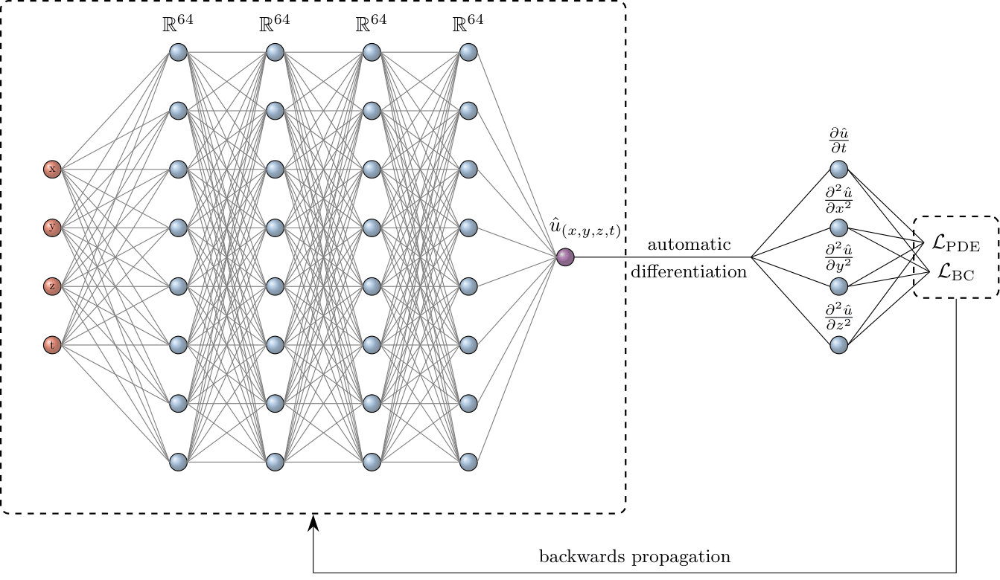
activation = pinnjax.Activation(jax.nn.gelu, kwargs={"approximate": False})
Part of the reason we are using GELU is because of the residuals we plan to solve in a moment. These residuals involve second-order derivatives of our output prediction. Therefore, it is important that our activation function is at least C2-smooth, and thus has continuous first- and second-order derivatives. That isn't to say that we must use GELU in these cases, but rather explains why we aren't using RELU, as was the case in the diffusion example.
And, once again, we use a FNN, and piece it all together.
model = pinnjax.FNN(
domain,
topology,
activation,
initialization=initialization,
optimization=optimization,
)
Residuals & Losses#
The residuals used in this example are all currently included in \(\texttt{PINN-JAX}\); however, it's unlikely you'll find much personal use for them other than DirichletBoundaryCondition, which works as you'd expect.
If you'd like to know more about the inner workings of these classes, check the relevant documentation. However, it should be clear from the problem set up what physics each of these residuals are referring to.
For easier access,
GoldakHeatFlux- (PartialDifferentialEquation)RobinHeatFlux- (BoundaryCondition)DirichletBoundaryCondition- (BoundaryCondition)
Reminder
PartialDifferentialEquation, BoundaryCondition, and InitialCondition are functionally identical except in the cases of "class"-based training and plotting.
pde = pinnjax.GoldakHeatFlux(thermal_material, goldak, path)
robin = pinnjax.RobinHeatFlux(thermal_material)
dirichlet = pinnjax.DirichletBoundaryCondition(
condition=thermal_material.ambient_temperature # 298 K
)
The physical residuals are constructed from the governing equations detailed in the Problem Description by rearranging each equation into residual form such that the resulting expression is equal to zero.
From there, we take the MSE to calculate the loss.
The losses are then weighted, with the weights normalized such that their mean is 1, so as to avoid changing the overall loss scale:
Those residuals are then assigned to the geometry in the same order as the internal, primitive Shapes like previously seen in other examples.
residual_functions: list[pinnjax.Residual] = [
pde,
robin,
robin,
robin,
robin,
dirichlet,
robin,
pde, # added path residual - `Box`
robin, # added path residual - `Rectangle`
]
geometry.assign_residuals(residual_functions)
geometry.assign_loss(pinnjax.ResidualMSError())
As evident from .assign_loss(), providing a single Loss or Residual, rather than a list, will assign it to all internal Shapes.
Evaluation#
If you play around with the parameters a bit and watch the losses during training, you will come to realize that it can be difficult to know for certain how low the losses have to get to achieve 'decent' results. This is because the Residuals, at least the ones used here, are not normalized, and thus the differences from the expected physics are absolute rather than relative. Simply modifying the material parameters can therefore increase or decrease the loss. In this example, losses can be as high as 1e18 and still be rather "good". Therefore, it is useful to compare our current predictions at runtime to something other than physics to get a better idea of how well our model is currently performing.
ground_truth = (
pathlib.Path(__file__).resolve().parent /
"_ground_truth" /
PROJECT_NAME /
"FEM_FC_3s.csv"
)
evaluation = pinnjax.SingleSpatialGridEvaluation.from_csv_file(
ground_truth_path=ground_truth,
# the model contains the `SpatialDomain`,
# but the `domain` can be provided instead.
# if the `model` is provided we can evaluate the model
# against the `Evaluation` easier.
model=model,
comparison_time=1.5, # s
csv_coordinate_column_order=[1, 2, 3, 0], # to match [x, y, z, t]
csv_truth_column=-1,
regularity=100,
)
For this we have the 'true' solution, generated using traditional FEM methods and saved to a .csv file. In this case, the columns are (t, x, y, z, T), so we use csv_coordinate_column_order to restructure the .csv. The rows then span the entire spatial and temporal domain used here. It also uses the same thermal material and Goldak parameters; thus, if you modify those, the comparison will get worse. That doesn't mean the model is training worse, only that it's being compared to the wrong thing.
This particular Evaluation calculates RMSE, Relative L2, and R2, but we could change this by writing a child SingleSpatialGridEvaluation with a new evaluate() method and updating the FORMAT, DICTIONARY, and METRIC_DIRECTION class variables.
The __call__() method simply calls evaluate(). Or perhaps a different, or entirely custom, Evaluation is necessary for your purposes.
SingleSpatialGridEvaluation also includes a number of methods for plotting and slicing.
First, we could simply plot our evaluation at the provided comparison_time,
evaluation.plot()
Figure
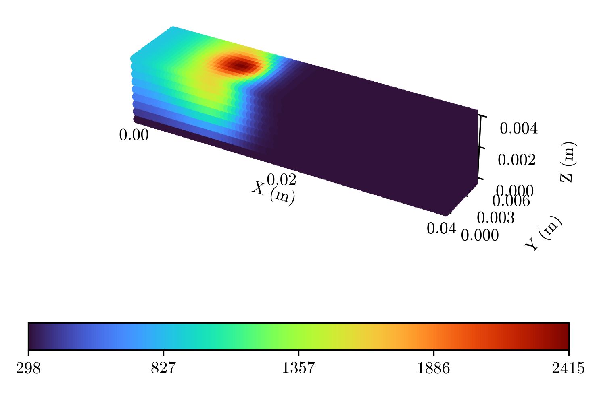
Or, instead just a slice.
evaluation.plot(fixed_coordinates={"z": domain.max[2]})
Figure
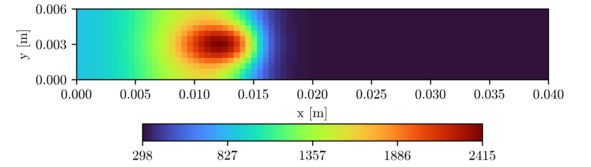
Perhaps, we decide after the creation of evaluation that we would rather look at a different moment in time.
evaluation.update_truth_at(comparison_time=1.0)
evaluation.plot(fixed_coordinates={"z": domain.max[2]})
Figure
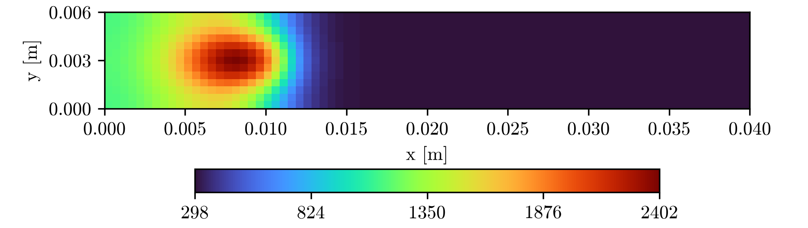
Training#
Let's now set up the training parameters.
scheduler = optax.exponential_decay(
init_value=1e-3,
transition_steps=100,
decay_rate=0.96
)
Using optax means utilizing more than just the schedulers and optimizers used previously. We can also use optax tools to combine optimizers.
chain = optax.chain(
optax.clip_by_global_norm(1.0),
optax.adabelief(learning_rate=scheduler, b1=0.9, b2=0.999, eps=1e-16),
)
You'll notice a different construction for the pinnjax.Optimizer than in the case of the previous examples. This is due to the .chain() used in the previous step. If you also wish to chain optimizers, then just copy the construction below, and everything should work as expected.
optimizer = pinnjax.Optimizer(opt_=lambda: chain, args=[], kwargs={})
training = pinnjax.Training(
optimizer,
epochs=5_000,
train_mode="type",
early_stopping=True,
patience=500,
rel_tolerance=0.001,
)
As a reminder, train_mode="type" means that losses are weighted by type [PDE, BC, IC], as opposed to train_mode="class", where the same losses might be weighted as [GoldakHeatFlux, RobinHeatFlux, DirichletBoundaryCondition, InitialCondition]. This has implications in this example because RobinHeatFlux and DirichletBoundaryCondition are both BoundaryConditions. Therefore, if train_mode="type", those losses would be summed together and share a weight \(\omega_{BC}\).
While not used here, it is important to note that, with the introduction of Evaluation, we can change the selection_criteria between "loss" and "evaluate". This affects both early_stopping and the final returned best_model, as each is determined using either the loss metrics or the evaluation metrics.
When selection_criteria = "evaluate" is used, the current metric_key is used as the selection basis. This can either be set when constructing Evaluation or changed using the .select_metric_key method, where key is the str name of the selected metric in the DICTIONARY. This is also where the metric_direction becomes important, since for some metrics a higher value is considered better.
And now we train.
updated_model = pinnjax.train(
model,
geometry,
training,
evaluation=evaluation,
verbosity=25,
)
Afterwards, we can plot the results: both the change in loss across epochs and the change in our evaluation, using .plot_loss() and .plot_evaluation(), respectively.
geometry.plot_loss(mode="class", show_best_epoch=True)
Figure
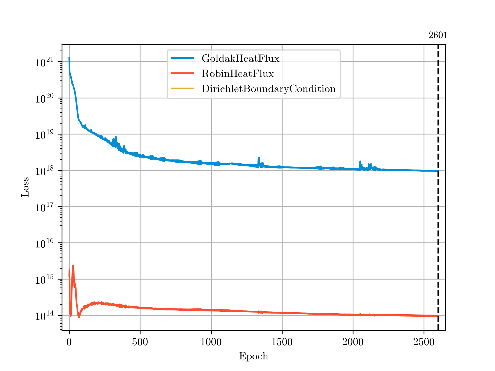
geometry.plot_evaluation(scale="linear", normalize=True, show_best_epoch=True)
With .plot_evaluation(), the scale can be either "linear", "semilogy", "semilogx", or "loglog".
Figure
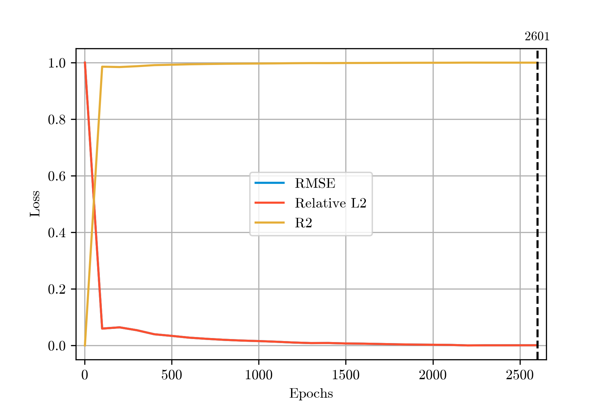
Prediction#
Since this is a 3D domain, we could of course compare against a 3D grid. However, we can also compare against a 2D domain and take internal slices, which may be more informative than the pure 3D version.
grid_2D = pinnjax.RectangularGrid2D(
domain=updated_model.domain,
fixed_coordinates={"z": float(domain.max[2])},
num_points=(200, 100),
time_range=(time.min, time.max),
num_times=100,
)
To explain each of the parameters, we provide the whole 3D domain, but then fix
one of the coordinates. Similar to when we use .center(), this results in a
2D slice. We then want 200 points in the x direction and 100 in the y direction,
for 20,000 spatial points, and then 100 timesteps for a grand total
of 2,000,000 spatial-temporal points, and thus model predictions.
Now simply input the updated model and the Grid into predict_evolution().
predictions = pinnjax.predict_evolution(updated_model, grid_2D)
And then plot the results.
pinnjax.plot_prediction_evolution(predictions, grid_2D)
We could also predict a single point using pinnjax.predict() and pinnjax.plot_prediction(). In that case, the Grid constructed wouldn't need its own temporal points, and instead a time scalar could be given to pinnjax.predict().
Figure
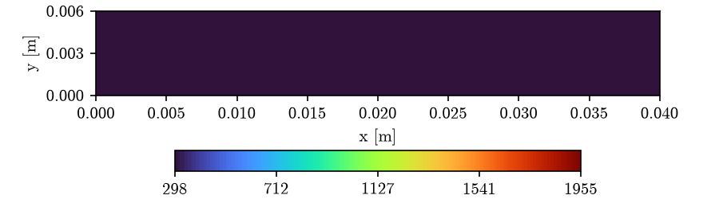
Next, we can plot the predictions at a number of points throughout the entire time domain. We can also compare the results directly against the .csv, by including the pathlib.Path to the .csv.
Note
This is planned to eventually work with Evaluation in general, but that isn't the case yet.
First, to select some points:
spatial_points = [
[0.2, 0.5, 1.0],
[0.7, 0.5, 1.0],
[0.5, 0.5, 1.0],
[0.3, 0.25, 1.0],
[0.6, 0.75, 1.0],
]
pinnjax.value_over_time_plot(
spatial_points=spatial_points,
point_type="percentage",
model=updated_model,
truth=ground_truth,
csv_coordinate_column_order=[1, 2, 3, 0], # to match [x, y, z, t]
csv_truth_column=-1,
domain=domain,
show_points=True,
x_axis_label="Time [s]",
y_axis_label="Temperature [K]",
)
Because point_type = "percentage", as opposed to "coordinate", the spatial_points are interpreted as normalized fractions of the SpatialDomain. show_points=True visualizes that for us by generating a secondary plot showing the selected spatial_points within the domain.
Figure
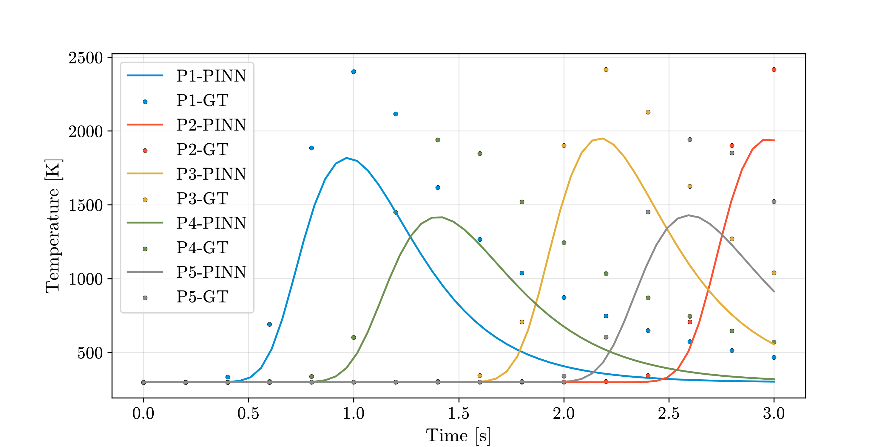
Figure
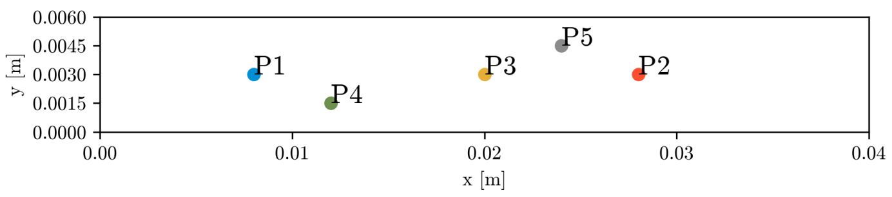
Or, instead of looking at particular points, we can look at particular times,
evaluating the whole Path at those time_instances.
time_instances = [0.6, 1.3, 2.2] # s
pinnjax.value_along_path_plot(
time_instances=time_instances,
path=path,
model=updated_model,
domain=domain,
truth=ground_truth,
csv_coordinate_column_order=[1, 2, 3, 0], # to match [x, y, z, t]
csv_truth_column=-1,
y_axis_label="Temperature [K]",
)
Figure
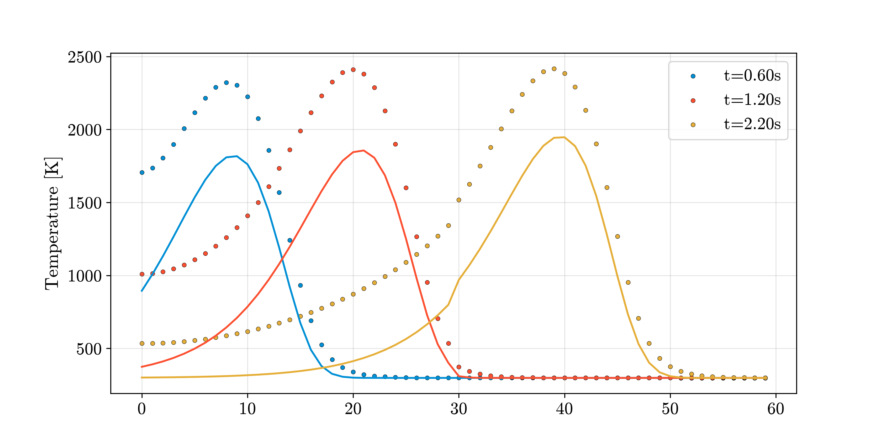
Well, those don't look great. Time for hyperparameter optimization, but I'll leave that to you.